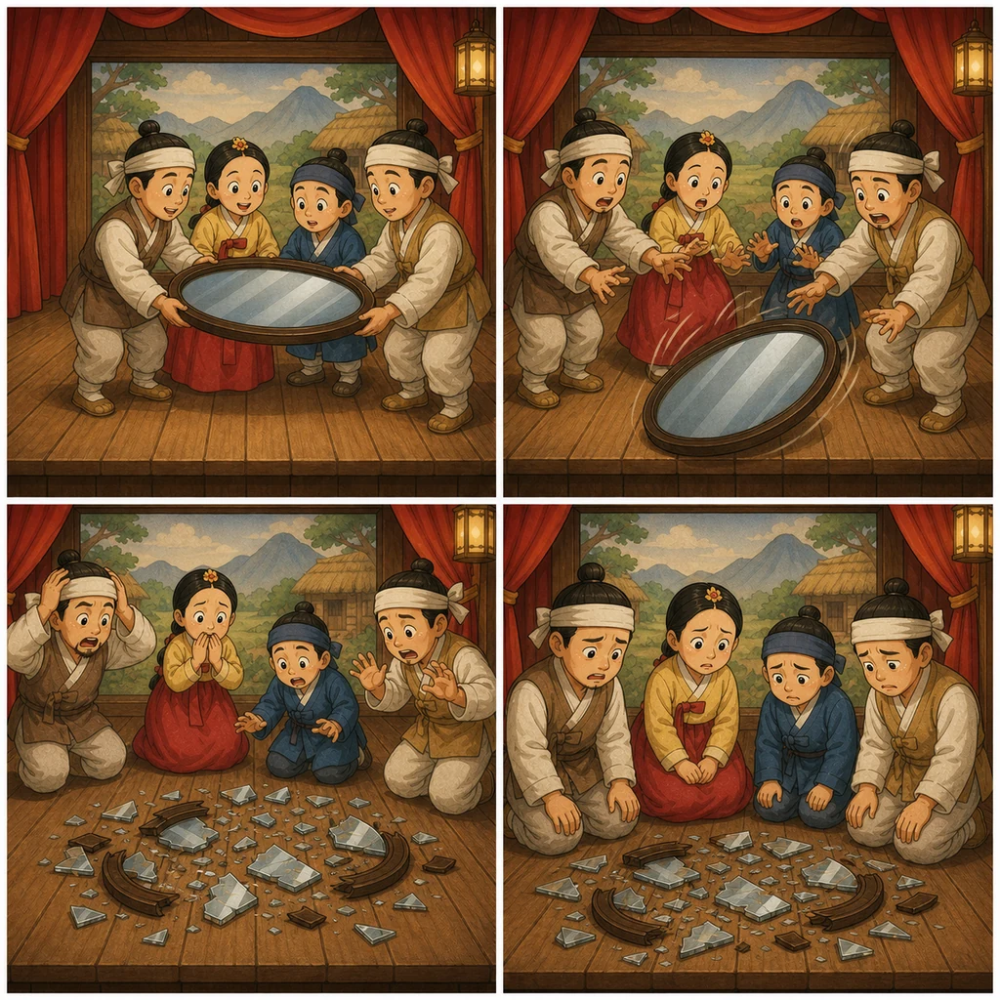

Meaning
결국 그렇게 되어 버림
V-고 말다는 어떤 행동이나 사건이 결국 일어난 결과를 말합니다. “원하지 않았는데 그렇게 되었다”는 느낌이 자주 있습니다.
Dùng khi một việc cuối cùng đã xảy ra, thường kèm cảm giác tiếc nuối hoặc không mong muốn.
Grammar 2
어떤 일이 결국 일어나 버렸다는 결과를 말합니다. 원하지 않았거나 아쉬운 상황을 설명할 때 특히 자주 씁니다.

Meaning
V-고 말다는 어떤 행동이나 사건이 결국 일어난 결과를 말합니다. “원하지 않았는데 그렇게 되었다”는 느낌이 자주 있습니다.
Form
과거 결과는 V-고 말았어요로 자주 씁니다.
-고 말다 sau thân động từ. Quá khứ thường dùng -고 말았어요.Example
실수나 예상 밖의 결과를 설명할 때 좋습니다.
Compare
V-아/어 버리다도 결과를 말하지만, V-고 말다는 “결국 그렇게 되어 버렸다”는 아쉬움이 더 강합니다.
Quick Check